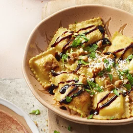

Balsamic Ravioli

Description
This is a robust flavored ravioli that will melt in your mouth.
It has subtle but rich flavors of ricotta cheese, parmesan, with a kick of balsamic.
Ingredients
- 1/2 cup walnuts
- 1(25 ounce) package of store-bought ravioli
- 2 tablespoons butter
- 2 tablespoons balsamic vinegar
- 1/4 cup grated Parmesan cheese
Preparation and Steps
- Toast walnuts in skillet over medium heat for 8 to 10 minutes. Remove from skillet.
- Fill pot with lightly salted water bring to boil.
- Stir in ravioli and return to boil. Cook until ravioli floats about 3 to 5 minutes.
- Warm butter in a skillet over medium heat until slightly brown.
- Add balsamic vinegar, stir until combined for 1 to 2 minutes.
- Stir in ravioli, mix until combined. Top with walnuts and Parmesan cheese.
Back to Recipes